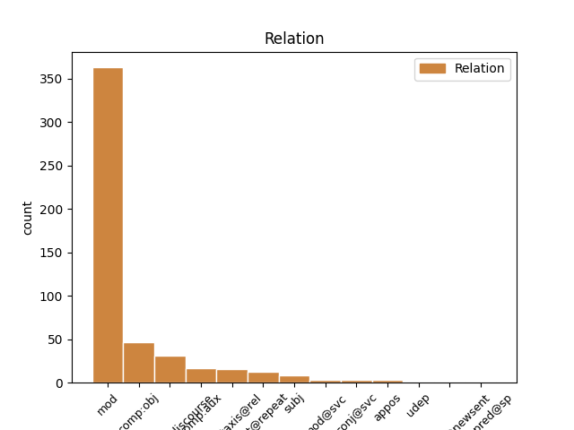

Distribution of features within this leaf

Agreement Rules sorted by frequency.
- When the dependent token is the modifer(mod) of the head token, and the dependent token is VERB.
1 Однак _ _ _ _ 0 _ _ _
2 , _ _ _ _ 0 _ _ _
3 незважаючи незважаючи VERB Vmpgp Aspect=Imp|Polarity=Neg|Tense=Pres|VerbForm=Conv 16 mod _ Id=38zv|LTranslit=nezvažajučy|Translit=nezvažajučy
4 на _ _ _ _ 0 _ _ _
5 судові _ _ _ _ 0 _ _ _
6 справи _ _ _ _ 0 _ _ _
7 і _ _ _ _ 0 _ _ _
8 протести _ _ _ _ 0 _ _ _
9 громадськості _ _ _ _ 0 _ _ _
10 , _ _ _ _ 0 _ _ _
11 дельфінарій _ _ _ _ 0 _ _ _
12 " _ _ _ _ 0 _ _ _
13 НЕМО _ _ _ _ 0 _ _ _
14 " _ _ _ _ 0 _ _ _
15 не _ _ _ _ 0 _ _ _
16 збирається збиратися VERB Vmpip3s Aspect=Imp|Mood=Ind|Number=Sing|Person=3|Tense=Pres|VerbForm=Fin 0 _ _ _
17 втрачати _ _ _ _ 0 _ _ _
18 " _ _ _ _ 0 _ _ _
19 годівницю _ _ _ _ 0 _ _ _
20 " _ _ _ _ 0 _ _ _
21 , _ _ _ _ 0 _ _ _
22 тому _ _ _ _ 0 _ _ _
23 почав _ _ _ _ 0 _ _ _
24 шукати _ _ _ _ 0 _ _ _
25 нове _ _ _ _ 0 _ _ _
26 місце _ _ _ _ 0 _ _ _
27 свого _ _ _ _ 0 _ _ _
28 розташування _ _ _ _ 0 _ _ _
29 . _ _ _ _ 0 _ _ _
1 Прибігаємо _ _ _ _ 0 _ _ _
2 в _ _ _ _ 0 _ _ _
3 село _ _ _ _ 0 _ _ _
4 , _ _ _ _ 0 _ _ _
5 помітили помітити VERB Vmeis-p Aspect=Perf|Mood=Ind|Number=Plur|Tense=Past|VerbForm=Fin 0 _ _ _
6 в _ _ _ _ 0 _ _ _
7 яку _ _ _ _ 0 _ _ _
8 хату _ _ _ _ 0 _ _ _
9 він _ _ _ _ 0 _ _ _
10 ускочив ускочити VERB Vmeis-sm Aspect=Perf|Gender=Masc|Mood=Ind|Number=Sing|Tense=Past|VerbForm=Fin 5 comp:obj _ Id=33b8|LTranslit=uskočyty|SpaceAfter=No|Translit=uskočyv
11 . _ _ _ _ 0 _ _ _
1 Під _ _ _ _ 0 _ _ _
2 час _ _ _ _ 0 _ _ _
3 показу _ _ _ _ 0 _ _ _
4 у _ _ _ _ 0 _ _ _
5 США _ _ _ _ 0 _ _ _
6 , _ _ _ _ 0 _ _ _
7 що _ _ _ _ 0 _ _ _
8 розпочався _ _ _ _ 0 _ _ _
9 18 _ _ _ _ 0 _ _ _
10 вересня _ _ _ _ 0 _ _ _
11 2015 _ _ _ _ 0 _ _ _
12 року _ _ _ _ 0 _ _ _
13 , _ _ _ _ 0 _ _ _
14 протягом _ _ _ _ 0 _ _ _
15 першого _ _ _ _ 0 _ _ _
16 тижня _ _ _ _ 0 _ _ _
17 фільм _ _ _ _ 0 _ _ _
18 був бути AUX Vapis-sm Aspect=Imp|Gender=Masc|Mood=Ind|Number=Sing|Tense=Past|VerbForm=Fin 0 _ _ _
19 показаний _ _ _ _ 0 _ _ _
20 у _ _ _ _ 0 _ _ _
21 545 _ _ _ _ 0 _ _ _
22 кінотеатрах _ _ _ _ 0 _ _ _
23 і _ _ _ _ 0 _ _ _
24 зібрав _ _ _ _ 0 _ _ _
25 7 222 035 _ _ _ _ 0 _ _ _
26 $ _ _ _ _ 0 _ _ _
27 , _ _ _ _ 0 _ _ _
28 що _ _ _ _ 0 _ _ _
29 на _ _ _ _ 0 _ _ _
30 той _ _ _ _ 0 _ _ _
31 час _ _ _ _ 0 _ _ _
32 дозволило дозволити VERB Vmeis-sn Aspect=Perf|Gender=Neut|Mood=Ind|Number=Sing|Tense=Past|VerbForm=Fin 18 parataxis@rel _ Id=39rh|LTranslit=dozvolyty|Translit=dozvolylo
33 йому _ _ _ _ 0 _ _ _
34 зайняти _ _ _ _ 0 _ _ _
35 5 _ _ _ _ 0 _ _ _
36 місце _ _ _ _ 0 _ _ _
37 серед _ _ _ _ 0 _ _ _
38 усіх _ _ _ _ 0 _ _ _
39 прем'єр _ _ _ _ 0 _ _ _
40 . _ _ _ _ 0 _ _ _
1 Судячи судити VERB Vmpgp Aspect=Imp|Tense=Pres|VerbForm=Conv 6 parataxis@discourse _ Id=2cs2|LTranslit=sudyty|Translit=Suďаčy
2 з _ _ _ _ 0 _ _ _
3 усього _ _ _ _ 0 _ _ _
4 , _ _ _ _ 0 _ _ _
5 Ґоблін _ _ _ _ 0 _ _ _
6 має мати VERB Vmpip3s Aspect=Imp|Mood=Ind|Number=Sing|Person=3|Tense=Pres|VerbForm=Fin 0 _ _ _
7 діагноз _ _ _ _ 0 _ _ _
8 . _ _ _ _ 0 _ _ _
1 І _ _ _ _ 0 _ _ _
2 видно _ _ _ _ 0 _ _ _
3 всі _ _ _ _ 0 _ _ _
4 сузір'я _ _ _ _ 0 _ _ _
5 , _ _ _ _ 0 _ _ _
6 всі _ _ _ _ 0 _ _ _
7 туманності _ _ _ _ 0 _ _ _
8 , _ _ _ _ 0 _ _ _
9 які _ _ _ _ 0 _ _ _
10 падають падати VERB Vmpip3p Aspect=Imp|Mood=Ind|Number=Plur|Person=3|Tense=Pres|VerbForm=Fin 0 _ _ _
11 , _ _ _ _ 0 _ _ _
12 падають падати VERB Vmpip3p Aspect=Imp|Mood=Ind|Number=Plur|Person=3|Tense=Pres|VerbForm=Fin 10 flat@repeat _ Id=2plc|LTranslit=padaty|Translit=padajuť
13 на _ _ _ _ 0 _ _ _
14 тебе _ _ _ _ 0 _ _ _
1 Що _ _ _ _ 0 _ _ _
2 , _ _ _ _ 0 _ _ _
3 наприклад _ _ _ _ 0 _ _ _
4 , _ _ _ _ 0 _ _ _
5 мила _ _ _ _ 0 _ _ _
6 й _ _ _ _ 0 _ _ _
7 безпосередня _ _ _ _ 0 _ _ _
8 журналістка _ _ _ _ 0 _ _ _
9 , _ _ _ _ 0 _ _ _
10 яка _ _ _ _ 0 _ _ _
11 під _ _ _ _ 0 _ _ _
12 час _ _ _ _ 0 _ _ _
13 Майдану _ _ _ _ 0 _ _ _
14 була бути AUX Vapis-sf Aspect=Imp|Gender=Fem|Mood=Ind|Number=Sing|Tense=Past|VerbForm=Fin 0 _ _ _
15 ляпнула ляпнути VERB Vmeis-sf Aspect=Perf|Gender=Fem|Mood=Ind|Number=Sing|Tense=Past|VerbForm=Fin 14 comp:aux _ Id=2b5k|LTranslit=ľаpnuty|Translit=ľаpnula
16 мені _ _ _ _ 0 _ _ _
17 в _ _ _ _ 0 _ _ _
18 ефірі _ _ _ _ 0 _ _ _
19 " _ _ _ _ 0 _ _ _
20 Громадського _ _ _ _ 0 _ _ _
21 " _ _ _ _ 0 _ _ _
22 : _ _ _ _ 0 _ _ _
23 " _ _ _ _ 0 _ _ _
24 Шевельов _ _ _ _ 0 _ _ _
25 ? _ _ _ _ 0 _ _ _
26 Так _ _ _ _ 0 _ _ _
27 він _ _ _ _ 0 _ _ _
28 же _ _ _ _ 0 _ _ _
29 нацистський _ _ _ _ 0 _ _ _
30 колаборант _ _ _ _ 0 _ _ _
31 ! _ _ _ _ 0 _ _ _
32 " _ _ _ _ 0 _ _ _
33 , _ _ _ _ 0 _ _ _
34 - _ _ _ _ 0 _ _ _
35 не _ _ _ _ 0 _ _ _
36 " _ _ _ _ 0 _ _ _
37 темник _ _ _ _ 0 _ _ _
38 " _ _ _ _ 0 _ _ _
39 від _ _ _ _ 0 _ _ _
40 ФСБ _ _ _ _ 0 _ _ _
41 слідом _ _ _ _ 0 _ _ _
42 за _ _ _ _ 0 _ _ _
43 Добкіним _ _ _ _ 0 _ _ _
44 озвучувала _ _ _ _ 0 _ _ _
45 , _ _ _ _ 0 _ _ _
46 а _ _ _ _ 0 _ _ _
47 просто _ _ _ _ 0 _ _ _
48 " _ _ _ _ 0 _ _ _
49 на _ _ _ _ 0 _ _ _
50 автоматі _ _ _ _ 0 _ _ _
51 " _ _ _ _ 0 _ _ _
52 , _ _ _ _ 0 _ _ _
53 як _ _ _ _ 0 _ _ _
54 німфа _ _ _ _ 0 _ _ _
55 Ехо _ _ _ _ 0 _ _ _
56 , _ _ _ _ 0 _ _ _
57 повторила _ _ _ _ 0 _ _ _
58 те _ _ _ _ 0 _ _ _
59 , _ _ _ _ 0 _ _ _
60 що _ _ _ _ 0 _ _ _
61 найголосніше _ _ _ _ 0 _ _ _
62 в _ _ _ _ 0 _ _ _
63 ефірах _ _ _ _ 0 _ _ _
64 про _ _ _ _ 0 _ _ _
65 Шевельова _ _ _ _ 0 _ _ _
66 звучало _ _ _ _ 0 _ _ _
67 ( _ _ _ _ 0 _ _ _
68 чула _ _ _ _ 0 _ _ _
69 дзвін _ _ _ _ 0 _ _ _
70 ! _ _ _ _ 0 _ _ _
71 ) _ _ _ _ 0 _ _ _
72 . _ _ _ _ 0 _ _ _
1 Мені _ _ _ _ 0 _ _ _
2 стало стати VERB Vmeis-sn Aspect=Perf|Gender=Neut|Mood=Ind|Number=Sing|Tense=Past|VerbForm=Fin 0 _ _ _
3 ясно _ _ _ _ 0 _ _ _
4 , _ _ _ _ 0 _ _ _
5 чому _ _ _ _ 0 _ _ _
6 , _ _ _ _ 0 _ _ _
7 коли _ _ _ _ 0 _ _ _
8 я _ _ _ _ 0 _ _ _
9 напередодні _ _ _ _ 0 _ _ _
10 нашого _ _ _ _ 0 _ _ _
11 бою _ _ _ _ 0 _ _ _
12 випадково _ _ _ _ 0 _ _ _
13 проходив _ _ _ _ 0 _ _ _
14 повз _ _ _ _ 0 _ _ _
15 чеський _ _ _ _ 0 _ _ _
16 курінь _ _ _ _ 0 _ _ _
17 , _ _ _ _ 0 _ _ _
18 між _ _ _ _ 0 _ _ _
19 ним _ _ _ _ 0 _ _ _
20 і _ _ _ _ 0 _ _ _
21 противником _ _ _ _ 0 _ _ _
22 стояла стояти VERB Vmpis-sf Aspect=Imp|Gender=Fem|Mood=Ind|Number=Sing|Tense=Past|VerbForm=Fin 2 subj _ Id=22i6|LTranslit=stojaty|Translit=stojala
23 дивна _ _ _ _ 0 _ _ _
24 тиша _ _ _ _ 0 _ _ _
25 . _ _ _ _ 0 _ _ _
1 Припускаю _ _ _ _ 0 _ _ _
2 ( _ _ _ _ 0 _ _ _
3 поки _ _ _ _ 0 _ _ _
4 не _ _ _ _ 0 _ _ _
5 доведено _ _ _ _ 0 _ _ _
6 протилежне _ _ _ _ 0 _ _ _
7 ) _ _ _ _ 0 _ _ _
8 , _ _ _ _ 0 _ _ _
9 що _ _ _ _ 0 _ _ _
10 автори _ _ _ _ 0 _ _ _
11 їх _ _ _ _ 0 _ _ _
12 просто _ _ _ _ 0 _ _ _
13 " _ _ _ _ 0 _ _ _
14 не _ _ _ _ 0 _ _ _
15 бачать бачити VERB Vmpip3p Aspect=Imp|Mood=Ind|Number=Plur|Person=3|Tense=Pres|VerbForm=Fin 0 _ _ _
16 " _ _ _ _ 0 _ _ _
17 - _ _ _ _ 0 _ _ _
18 не _ _ _ _ 0 _ _ _
19 виокремлюють виокремлювати VERB Vmpip3p Aspect=Imp|Mood=Ind|Number=Plur|Person=3|Tense=Pres|VerbForm=Fin 15 appos _ Id=2b4y|LTranslit=vyokremľuvaty|Translit=vyokremľujuť
20 із _ _ _ _ 0 _ _ _
21 дискурсу _ _ _ _ 0 _ _ _
22 , _ _ _ _ 0 _ _ _
23 яким _ _ _ _ 0 _ _ _
24 послуговуються _ _ _ _ 0 _ _ _
25 . _ _ _ _ 0 _ _ _
1 Те _ _ _ _ 0 _ _ _
2 , _ _ _ _ 0 _ _ _
3 що _ _ _ _ 0 _ _ _
4 ми _ _ _ _ 0 _ _ _
5 з _ _ _ _ 0 _ _ _
6 колегами _ _ _ _ 0 _ _ _
7 бекали _ _ _ _ 0 _ _ _
8 - _ _ _ _ 0 _ _ _
9 мекали _ _ _ _ 0 _ _ _
10 то _ _ _ _ 0 _ _ _
11 сям _ _ _ _ 0 _ _ _
12 то _ _ _ _ 0 _ _ _
13 там _ _ _ _ 0 _ _ _
14 , _ _ _ _ 0 _ _ _
15 то _ _ _ _ 0 _ _ _
16 се _ _ _ _ 0 _ _ _
17 то _ _ _ _ 0 _ _ _
18 те _ _ _ _ 0 _ _ _
19 , _ _ _ _ 0 _ _ _
20 людина _ _ _ _ 0 _ _ _
21 взяла взяти VERB Vmeis-sf Aspect=Perf|Gender=Fem|Mood=Ind|Number=Sing|Tense=Past|VerbForm=Fin 0 _ _ _
22 й _ _ _ _ 0 _ _ _
23 сформулювала сформулювати VERB Vmeis-sf Aspect=Perf|Gender=Fem|Mood=Ind|Number=Sing|Tense=Past|VerbForm=Fin 21 conj@svc _ Id=1npk|LTranslit=sformuľuvaty|Translit=sformuľuvala
24 стисло _ _ _ _ 0 _ _ _
25 , _ _ _ _ 0 _ _ _
26 чітко _ _ _ _ 0 _ _ _
27 й _ _ _ _ 0 _ _ _
28 по _ _ _ _ 0 _ _ _
29 суті _ _ _ _ 0 _ _ _
30 . _ _ _ _ 0 _ _ _
1 Ну _ _ _ _ 0 _ _ _
2 а _ _ _ _ 0 _ _ _
3 це _ _ _ _ 0 _ _ _
4 вже _ _ _ _ 0 _ _ _
5 пішов піти VERB Vmeis-sm Aspect=Perf|Gender=Masc|Mood=Ind|Number=Sing|Tense=Past|VerbForm=Fin 0 _ _ _
6 подивився подивитися VERB Vmeis-sm Aspect=Perf|Gender=Masc|Mood=Ind|Number=Sing|Tense=Past|VerbForm=Fin 5 mod@svc _ Id=1sdc|LTranslit=podyvytyśа|Translit=podyvyvśа
7 на _ _ _ _ 0 _ _ _
8 крепексі _ _ _ _ 0 _ _ _
9 вміст _ _ _ _ 0 _ _ _
10 /dev _ _ _ _ 0 _ _ _
11 , _ _ _ _ 0 _ _ _
12 а _ _ _ _ 0 _ _ _
13 також _ _ _ _ 0 _ _ _
14 mount _ _ _ _ 0 _ _ _
15 - _ _ _ _ 0 _ _ _
16 l _ _ _ _ 0 _ _ _
17 , _ _ _ _ 0 _ _ _
18 - _ _ _ _ 0 _ _ _
19 перелічує _ _ _ _ 0 _ _ _
20 змонтовані _ _ _ _ 0 _ _ _
21 фс _ _ _ _ 0 _ _ _
22 дерева _ _ _ _ 0 _ _ _
23 . _ _ _ _ 0 _ _ _
Disagree Examples:
1 Якось _ _ _ _ 0 _ _ _
2 зібралися зібратися VERB Vmeis-p Aspect=Perf|Mood=Ind|Number=Plur|Tense=Past|VerbForm=Fin 0 _ _ _
3 у _ _ _ _ 0 _ _ _
4 нього _ _ _ _ 0 _ _ _
5 , _ _ _ _ 0 _ _ _
6 ховаючися ховатися VERB Vmpgp Aspect=Imp|Tense=Pres|VerbForm=Conv 2 mod _ Id=000n|LTranslit=chovatyśа|Translit=chovajučyśа
7 від _ _ _ _ 0 _ _ _
8 переслідувань _ _ _ _ 0 _ _ _
9 , _ _ _ _ 0 _ _ _
10 одновірці _ _ _ _ 0 _ _ _
11 дружини _ _ _ _ 0 _ _ _
12 – _ _ _ _ 0 _ _ _
13 християнки _ _ _ _ 0 _ _ _
14 . _ _ _ _ 0 _ _ _
1 Щодо _ _ _ _ 0 _ _ _
2 неприхованого _ _ _ _ 0 _ _ _
3 обману _ _ _ _ 0 _ _ _
4 , _ _ _ _ 0 _ _ _
5 то _ _ _ _ 0 _ _ _
6 читання _ _ _ _ 0 _ _ _
7 приміток _ _ _ _ 0 _ _ _
8 до _ _ _ _ 0 _ _ _
9 нібито _ _ _ _ 0 _ _ _
10 академічного _ _ _ _ 0 _ _ _
11 дванадцятитомника _ _ _ _ 0 _ _ _
12 спричинює _ _ _ _ 0 _ _ _
13 ледь _ _ _ _ 0 _ _ _
14 не _ _ _ _ 0 _ _ _
15 ментальний _ _ _ _ 0 _ _ _
16 ступор _ _ _ _ 0 _ _ _
17 ; _ _ _ _ 0 _ _ _
18 у _ _ _ _ 0 _ _ _
19 якийсь _ _ _ _ 0 _ _ _
20 момент _ _ _ _ 0 _ _ _
21 геть _ _ _ _ 0 _ _ _
22 перестаєш _ _ _ _ 0 _ _ _
23 розуміти _ _ _ _ 0 _ _ _
24 , _ _ _ _ 0 _ _ _
25 як _ _ _ _ 0 _ _ _
26 же _ _ _ _ 0 _ _ _
27 то _ _ _ _ 0 _ _ _
28 Лариса _ _ _ _ 0 _ _ _
29 Косач _ _ _ _ 0 _ _ _
30 зберегла зберегти VERB Vmeis-sf Aspect=Perf|Gender=Fem|Mood=Ind|Number=Sing|Tense=Past|VerbForm=Fin 0 _ _ _
31 свої _ _ _ _ 0 _ _ _
32 інтернаціоналістські _ _ _ _ 0 _ _ _
33 й _ _ _ _ 0 _ _ _
34 соціалістичні _ _ _ _ 0 _ _ _
35 переконання _ _ _ _ 0 _ _ _
36 та _ _ _ _ 0 _ _ _
37 симпатії _ _ _ _ 0 _ _ _
38 до _ _ _ _ 0 _ _ _
39 братнього _ _ _ _ 0 _ _ _
40 російського _ _ _ _ 0 _ _ _
41 народу _ _ _ _ 0 _ _ _
42 ( _ _ _ _ 0 _ _ _
43 одразу _ _ _ _ 0 _ _ _
44 ж _ _ _ _ 0 _ _ _
45 зазначу _ _ _ _ 0 _ _ _
46 , _ _ _ _ 0 _ _ _
47 що _ _ _ _ 0 _ _ _
48 північних _ _ _ _ 0 _ _ _
49 сусідів _ _ _ _ 0 _ _ _
50 вона _ _ _ _ 0 _ _ _
51 в _ _ _ _ 0 _ _ _
52 листах _ _ _ _ 0 _ _ _
53 послідовно _ _ _ _ 0 _ _ _
54 називала _ _ _ _ 0 _ _ _
55 кацапами _ _ _ _ 0 _ _ _
56 , _ _ _ _ 0 _ _ _
57 геть _ _ _ _ 0 _ _ _
58 не _ _ _ _ 0 _ _ _
59 толерувала _ _ _ _ 0 _ _ _
60 , _ _ _ _ 0 _ _ _
61 і _ _ _ _ 0 _ _ _
62 насправді _ _ _ _ 0 _ _ _
63 всі _ _ _ _ 0 _ _ _
64 ці _ _ _ _ 0 _ _ _
65 її _ _ _ _ 0 _ _ _
66 філіпіки _ _ _ _ 0 _ _ _
67 на _ _ _ _ 0 _ _ _
68 адресу _ _ _ _ 0 _ _ _
69 колонізаторки _ _ _ _ 0 _ _ _
70 - _ _ _ _ 0 _ _ _
71 московщини _ _ _ _ 0 _ _ _
72 якраз _ _ _ _ 0 _ _ _
73 і _ _ _ _ 0 _ _ _
74 вилучали _ _ _ _ 0 _ _ _
75 якнайстаранніш _ _ _ _ 0 _ _ _
76 ) _ _ _ _ 0 _ _ _
77 , _ _ _ _ 0 _ _ _
78 повсякчас _ _ _ _ 0 _ _ _
79 перебуваючи перебувати VERB Vmpgp Aspect=Imp|Tense=Pres|VerbForm=Conv 30 mod _ Id=00aj|LTranslit=perebuvaty|SpaceAfter=No|Translit=perebuvajučy
80 , _ _ _ _ 0 _ _ _
81 коли _ _ _ _ 0 _ _ _
82 вірити _ _ _ _ 0 _ _ _
83 написаному _ _ _ _ 0 _ _ _
84 , _ _ _ _ 0 _ _ _
85 в _ _ _ _ 0 _ _ _
86 оточенні _ _ _ _ 0 _ _ _
87 злісних _ _ _ _ 0 _ _ _
88 українських _ _ _ _ 0 _ _ _
89 буржуазних _ _ _ _ 0 _ _ _
90 націоналістів _ _ _ _ 0 _ _ _
91 – _ _ _ _ 0 _ _ _
92 майбутніх _ _ _ _ 0 _ _ _
93 ворогів _ _ _ _ 0 _ _ _
94 радянського _ _ _ _ 0 _ _ _
95 ладу _ _ _ _ 0 _ _ _
96 , _ _ _ _ 0 _ _ _
97 шовіністів _ _ _ _ 0 _ _ _
98 та _ _ _ _ 0 _ _ _
99 ідеологів _ _ _ _ 0 _ _ _
100 контрреволюції _ _ _ _ 0 _ _ _
101 . _ _ _ _ 0 _ _ _
1 І _ _ _ _ 0 _ _ _
2 друкувалася друкуватися VERB Vmpis-sf Aspect=Imp|Gender=Fem|Mood=Ind|Number=Sing|Tense=Past|VerbForm=Fin 0 _ _ _
3 завжди _ _ _ _ 0 _ _ _
4 у _ _ _ _ 0 _ _ _
5 ворожих _ _ _ _ 0 _ _ _
6 « _ _ _ _ 0 _ _ _
7 буржуазно _ _ _ _ 0 _ _ _
8 - _ _ _ _ 0 _ _ _
9 націоналістичних _ _ _ _ 0 _ _ _
10 » _ _ _ _ 0 _ _ _
11 виданнях _ _ _ _ 0 _ _ _
12 , _ _ _ _ 0 _ _ _
13 як _ _ _ _ 0 _ _ _
14 - _ _ _ _ 0 _ _ _
15 от _ _ _ _ 0 _ _ _
16 , _ _ _ _ 0 _ _ _
17 на _ _ _ _ 0 _ _ _
18 думку _ _ _ _ 0 _ _ _
19 коментаторів _ _ _ _ 0 _ _ _
20 , _ _ _ _ 0 _ _ _
21 « _ _ _ _ 0 _ _ _
22 Зоря _ _ _ _ 0 _ _ _
23 » _ _ _ _ 0 _ _ _
24 , _ _ _ _ 0 _ _ _
25 « _ _ _ _ 0 _ _ _
26 Діло _ _ _ _ 0 _ _ _
27 » _ _ _ _ 0 _ _ _
28 , _ _ _ _ 0 _ _ _
29 не _ _ _ _ 0 _ _ _
30 кажучи казати VERB Vmpgp Aspect=Imp|Tense=Pres|VerbForm=Conv 2 mod _ Id=00qn|LTranslit=kazaty|Translit=kažučy
31 вже _ _ _ _ 0 _ _ _
32 про _ _ _ _ 0 _ _ _
33 « _ _ _ _ 0 _ _ _
34 Літературно _ _ _ _ 0 _ _ _
35 - _ _ _ _ 0 _ _ _
36 науковий _ _ _ _ 0 _ _ _
37 вісник _ _ _ _ 0 _ _ _
38 » _ _ _ _ 0 _ _ _
39 , _ _ _ _ 0 _ _ _
40 який _ _ _ _ 0 _ _ _
41 від _ _ _ _ 0 _ _ _
42 буржуазного _ _ _ _ 0 _ _ _
43 лібералізму _ _ _ _ 0 _ _ _
44 « _ _ _ _ 0 _ _ _
45 скотився _ _ _ _ 0 _ _ _
46 » _ _ _ _ 0 _ _ _
47 до _ _ _ _ 0 _ _ _
48 ідеології _ _ _ _ 0 _ _ _
49 фашизму _ _ _ _ 0 _ _ _
50 . _ _ _ _ 0 _ _ _
1 А _ _ _ _ 0 _ _ _
2 де _ _ _ _ 0 _ _ _
3 вже _ _ _ _ 0 _ _ _
4 зовсім _ _ _ _ 0 _ _ _
5 немає немати VERB Vmpip3s Aspect=Imp|Mood=Ind|Number=Sing|Person=3|Polarity=Neg|Tense=Pres|VerbForm=Fin 7 comp:aux _ Id=38w3|LTranslit=nematy|Translit=nemaě
6 як _ _ _ _ 0 _ _ _
7 було бути AUX Vapis-sn Aspect=Imp|Gender=Neut|Mood=Ind|Number=Sing|Tense=Past|VerbForm=Fin 0 _ _ _
8 перебрехати _ _ _ _ 0 _ _ _
9 , _ _ _ _ 0 _ _ _
10 вдавалися _ _ _ _ 0 _ _ _
11 до _ _ _ _ 0 _ _ _
12 спасенних _ _ _ _ 0 _ _ _
13 купюр _ _ _ _ 0 _ _ _
14 , _ _ _ _ 0 _ _ _
15 отих _ _ _ _ 0 _ _ _
16 крапок _ _ _ _ 0 _ _ _
17 у _ _ _ _ 0 _ _ _
18 квадратних _ _ _ _ 0 _ _ _
19 дужках _ _ _ _ 0 _ _ _
20 , _ _ _ _ 0 _ _ _
21 що _ _ _ _ 0 _ _ _
22 їх _ _ _ _ 0 _ _ _
23 у _ _ _ _ 0 _ _ _
24 дванадцятитомнику _ _ _ _ 0 _ _ _
25 безліч _ _ _ _ 0 _ _ _
26 . _ _ _ _ 0 _ _ _
1 Ми _ _ _ _ 0 _ _ _
2 з _ _ _ _ 0 _ _ _
3 кнакною _ _ _ _ 0 _ _ _
4 руки _ _ _ _ 0 _ _ _
5 одбили одбити VERB Vmeis-p Aspect=Perf|Mood=Ind|Number=Plur|Tense=Past|VerbForm=Fin 0 _ _ _
6 , _ _ _ _ 0 _ _ _
7 плескаючи плескати VERB Vmpgp Aspect=Imp|Tense=Pres|VerbForm=Conv 5 mod _ Id=00yh|LTranslit=pleskaty|SpaceAfter=No|Translit=pleskajučy
8 » _ _ _ _ 0 _ _ _
9 . _ _ _ _ 0 _ _ _